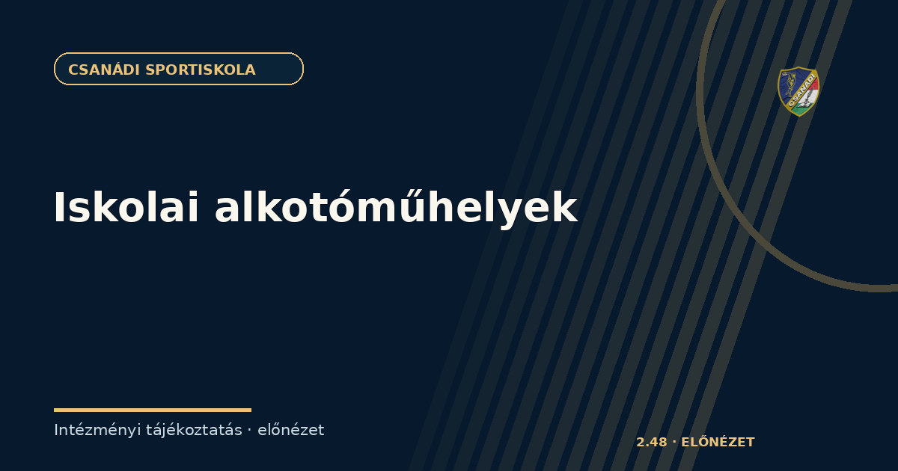

Weboldal- és megosztási előnézet
Iskolai alkotóműhelyek
Az alkotóműhelyek az ötletből tervet, a tervből bemutatható munkát készítő tanulási módszereket mutatják be. Az itt leírt lehetőségek nem jelentenek automatikus szakköri meghirdetést.
Megnyitás a Csanádi honlaponKapcsolódó témák
- Tervezés és alkotás – Az ötlettől a megvalósításon át a bemutatásig.
- Digitális alkotások – Az ismeretek rendezése és közlése különböző digitális formákban.
- Az alkotómunka dokumentálása – Az alábbi lépések általános tájékozódási segítséget adnak; a helyi eljárások jóváhagyott szabályai az irányadók.
A weboldal jelenlegi állapota tesztkiadás, illusztrációkkal és ellenőrzésre váró mintatartalmakkal.